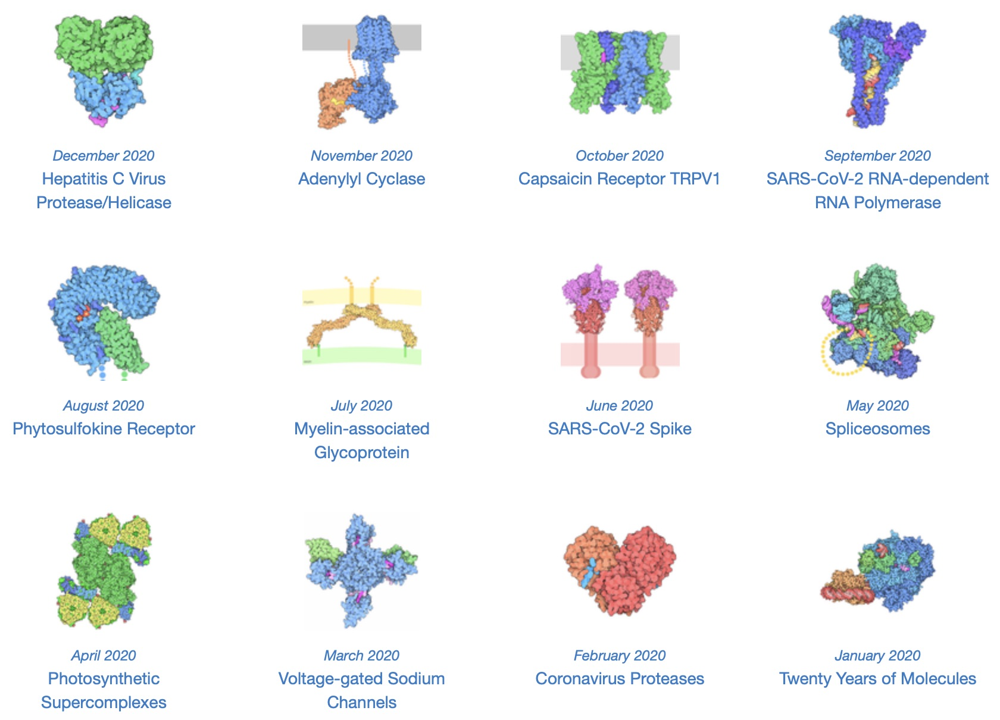
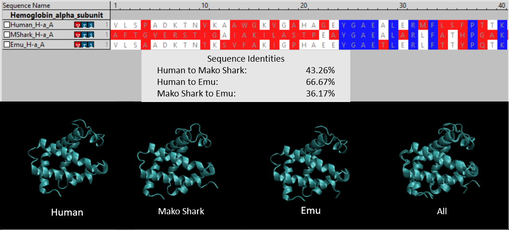
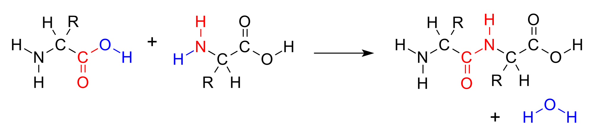

An Introduction to Protein Structure Prediction
Determining protein structure is fundamental to understanding protein function
Proteins are one of the most important groups of macromolecules in living organisms, contributing to essentially all functions within them. Recall that in our introduction to transcription in a previous module, we introduced the “central dogma” of molecular biology, in which DNA is transcribed into RNA, which is then translated into protein. This process is represented in the figure reproduced below.
 The central dogma of molecular biology states that molecular information flows from DNA in the nucleus, into the RNA that is transcribed from DNA, and then into proteins that are translated from RNA. Image courtesy: Dhorpool, Wikimedia commons user.
The central dogma of molecular biology states that molecular information flows from DNA in the nucleus, into the RNA that is transcribed from DNA, and then into proteins that are translated from RNA. Image courtesy: Dhorpool, Wikimedia commons user.
In this earlier module, we focused on how master regulators called transcription factors could affect the rates at which a given gene could be transcribed into RNA and translated into protein. In this module, we investigate what happens after translation.
Before continuing, we should be a bit more precise about what we mean by “protein”. The ribosome converts triplets of RNA nucleotides into a chain of amino acids called a polypeptide. The polypeptide will then “fold” into a three-dimensional shape; this folding happens without any outside influence as the polypeptide settles into the most stable three-dimensional structure. Even if a polypeptide chain is unfolded, it will almost always fold back into essentially the same 3-D structure in a manner of microseconds. This means that nature is applying a “magic algorithm” that produces the structure of a protein from its sequence of amino acids. But how does this algorithm work?
This brings us to our first biological problem of interest: can we predict the shape of a protein from its amino acid sequence? This structure prediction problem, which we will focus on in the first part of this module, is simple to state but deceptively difficult. In fact, it has been an active area of biological research for several decades.
You may be wondering why we care about protein structure. Knowing a protein’s shape is essential to starting to determine its function and how it interacts with other proteins or molecules in its environment. (There are still a few thousand human proteins whose function is unknown.) And understanding protein interactions underlies a huge amount of biological research. For example, a disease may be caused by a faulty protein, in which case researchers want to find a drug (i.e., some other chemical substance) that binds to the protein and causes some change of interest in that protein, such as inhibiting its behavior.
For a more visual example of how protein shape affects protein function, consider the following video of a ribosome (which is a complex of RNA and proteins) translating a messenger RNA into protein. For translation to succeed, the ribosome needs to have a very precise shape including a “slot” that the messenger RNA strand can fit into and be read.
As we have seen throughout this course, molecular interactions are ruled by probability. Any two molecules may interact, but their rate of dissociation will be much higher if they do not fit together well. Furthermore, two interacting molecules need to not only collide with each other but also have the correct orientation in order to fit together.
Because structure prediction is such a fundamental problem, researchers wish to catalog the enormously varied shapes that different proteins can have. For example, the figure below shows each “protein of the month” in 2019 named by the Protein Data Bank (PDB). But the fact remains that proteins are submicroscopic; so how did researchers determine these shapes?
 Each “molecule of the month” in 2020 named by the PDB. Note how different the shapes are of all these proteins, which accomplish a wide variety of cellular tasks. Note that the SARS-CoV-2 spike protein was the molecule of the month in June 2020. Source: https://pdb101.rcsb.org/motm/motm-by-date.
Laboratory methods for determining protein structure
In this section, we will introduce two popular laboratory methods for accurately determining protein structure. These approaches are very sophisticated, and we appeal to high-quality videos explaining them if you are interested.
In X-ray crystallography (sometimes called macromolecular crystallography), researchers first crystallize many copies of a protein and then shining an intense x-ray beam at the crystal. Light hitting the protein is diffracted, creating patterns from which the position of every atom in the protein can be inferred. If you are interested in learning more about X-ray crystallography, check out the following excellent two-part video series from The Royal Institution.
X-ray crystallography is over a century old, and has been the de facto approach for protein structure determination for decades. Yet a newer method is now rapidly replacing X-ray crystallography.
In cryo-electron microscopy (cryo-EM), researchers preserve thousands of copies of the protein in non-crystalline ice and then examine these copies with an electron microscope. Check out the following YouTube video from the University of California San Francisco for a detailed discussion of cryo-EM.
Unfortunately, laboratory approaches for structure determination are expensive. X-ray crystallography costs upward of $2,000 per protein; furthermore, crystallizing a protein is a challenging task, and each copy of the protein must line up in the same way, which does not work for very flexible proteins. As for cryo-EM, an electron microscope is a very complicated machine that costs hundreds of thousands or millions of dollars (one microscope housed at Lawrence Berkeley National Lab cost $27 million).
Protein structures that have been determined experimentally are typically stored in the PDB, which we mentioned above. As of early 2020, this database contained over 160,000 proteins, most of which have been added since 2000.
Before we set aside structure prediction, consider that a 2016 study estimated that humans have between 620,000 and 6.13 million protein isoforms (i.e., differently-shaped protein variants) 1. If we hope to catalog the proteins of all living things, then our work is just beginning.
Another issue with laboratory methods of structure determination is that they require the ability to isolate the actual physical proteins. For example, to study bacterial proteins, we need to culture bacteria, and yet microbiologists have estimated that less than 2% of bacteria can currently be cultured in the lab.2
What, then, can we do? Fortunately, although identifying protein structure is difficult, researchers have spent decades cataloging the genomes of thousands of species. Because of the central dogma of molecular biology, we know that much of this DNA winds up being translated into protein. As a result, biologists know the sequence of amino acids making up many proteins whose structures are unknown. In our case, although the SARS-CoV-2 genome had been sequenced in January 2020, the structure of its spike protein was unknown. Can we therefore use the sequence of amino acids corresponding to the SARS-CoV-2 spike protein to predict the protein’s 3-D shape? In other words, can we reverse engineer the magic algorithm that nature uses for protein folding?
What makes protein structure prediction so difficult?
Unfortunately, predicting protein structure from amino acid sequence is a very challenging problem. On the one hand, small perturbations in the primary structure of a protein can drastically change the protein’s shape and even render it useless. On the other, different amino acids can have similar chemical properties, and so some mutations will hardly change the shape of the protein at all. As a result, two very different amino acid sequences can fold into proteins with similar shapes and comparable function.
For example, the following figure compares both the sequences and structures of hemoglobin subunit alpha from humans (Homo sapiens; PDB: 1si4 shortfin mako sharks (Isurus oxyrinchus ; PDB: 3mkb and emus (Dromaius novaehollandia; PDB: 3wtg. Hemoglobin is the oxygen-transport protein in the blood, consisting of two alpha “subunit” proteins and two beta subunit proteins that combine into a protein complex; because hemoglobin is well-studied and much shorter than the SARS-CoV-2 spike protein, we will use it as an example throughout this module. The subunit alpha proteins across the three species are markedly different in terms of primary structure, and yet their 3-D structures are essentially identical.
 (Top) An amino acid sequence comparison of the first 40 (out of 140) amino acids of hemoglobin subunit alpha for three species: human, mako shark, and emu. A column is colored blue if all three species have the same amino acid, white if two species have the same amino acid, and red if all amino acids are different. Sequence identity calculates the number of positions in two amino acid sequences that share the same character. (Bottom) Side by side comparisons of the 3-D structures of the three proteins. The final figure on the right superimposes the first three structures to highlight their similarities.
Another reason why protein structure prediction is so difficult is because a polypeptide is very flexible, with the ability to rotate in multiple ways at each amino acid, which means that the polypeptide is able to fold into a staggering number of different shapes. A good analogy for polypeptide flexibility is the “Rubik’s Twist” puzzle, shown below, which consists of a linear chain of flexible blocks that can form a huge number of different shapes.
 An animation of Rubik’s twist forming into a ball and then back into a linear chain. Source: https://grabcad.com/library/rubik-s-snake-1.
An animation of Rubik’s twist forming into a ball and then back into a linear chain. Source: https://grabcad.com/library/rubik-s-snake-1.
To explain why the protein is so flexible, we should say a bit more about the molecular structure of a polypeptide.
An amino acid is formed of four parts. In the center, a carbon atom (called the alpha carbon) is connected to four different molecules: a hydrogen atom (H), a carboxyl group (–COOH), an amino group (-NH2), and a side chain (denoted “R” and often called an R group). The side chain is a molecule that differs between different amino acids and ranges in mass from a single hydrogen atom (glycine) all the way up to -C8H7N (tryptophan). The simplified structure of an amino acid is shown in the figure below.

To form a polypeptide chain, consecutive amino acids are linked together during a condensation reaction in which the amino group of one amino acid is joined to the carboxyl group of another, while a water molecule (H2O) is expelled. This reaction is illustrated by the figure below.
 A condensation reaction joins two amino acids into a “dipeptide” by joining the amino group of one amino acid to the carboxyl group of the other. Source: https://bit.ly/3q0Ph8V.
The resulting bond that is produced between the carbon atom of one amino acid’s carboxyl group and the nitrogen atom of the next amino acid’s amino group, called a peptide bond, is very strong. The peptide has very little rotation around this bond, which is almost always locked at 180°. As peptide bonds are formed between adjacent amino acids, the polypeptide chain takes shape, as shown in the figure below.
 A protein backbone formed of three amino acids.
A protein backbone formed of three amino acids.
However, the bonds within an amino acid, joining the alpha carbon to its carboxyl group and amino group, are not as rigid. Like the Rubik’s twist, the polypeptide is free to rotate around these two bonds. This rotation produces two angles of interest, called the phi angle (φ) and psi angle (ψ) (see figure below), which are formed at the alpha carbon’s connections to its amino group and carboxyl group, respectively.
A polypeptide chain of multiple amino acids with the torsion angles φ and ψ indicated. The angle ω indicates the angle of the peptide bond, which is typically 180°. Image courtesy: Adam Rędzikowski.
Below is an excellent video from Jacob Elmer illustrating how changing φ and ψ at a single amino acid can drastically reorient a protein’s shape.
A polypeptide with n amino acids will have n - 1 peptide bonds, meaning that its shape is influenced by n - 1 phi angles and 99 n - 1 psi angles. If each bond has k stable conformations, then there are k2n-2 total possible conformations of the polypeptide. For example, if k is 3 and n is just 100 (a short polypeptide), then the number of potential protein structures is more than the number of atoms in the universe! The ability for the protein to reliably find a single conformation using the magic algorithm despite such an enormous number of potential shapes is called Levinthal’s paradox.3
Although protein structure prediction is difficult, it is not impossible; the protein folding approach that nature uses is not, after all, magic. In the next lesson, we will examine how existing software attempts to replicate nature’s magic algorithm for folding a polypeptide chain into a 3-D protein structure. We will then place ourselves in the shoes of early SARS-CoV-2 researchers working before the structure of the virus’s spike protein had been experimentally validated to see if we can predict its structure and give biologists a head start on fighting the pandemic.
-
Ponomarenko, E. A., Poverennaya, E. V., Ilgisonis, E. V., Pyatnitskiy, M. A., Kopylov, A. T., Zgoda, V. G., Lisitsa, A. V., & Archakov, A. I. 2016. The Size of the Human Proteome: The Width and Depth. International journal of analytical chemistry, 2016, 7436849. https://doi.org/10.1155/2016/7436849 ↩
-
Wade W. 2002. Unculturable bacteria–the uncharacterized organisms that cause oral infections. Journal of the Royal Society of Medicine, 95(2), 81–83. https://doi.org/10.1258/jrsm.95.2.81 ↩
-
Levinthal, C. 1969. How to Fold Graciously. Mossbaur Spectroscopy in Biological Systems, Proceedings of a meeting held at Allerton House, Monticello, Illinois. eds. Debrunner, P., Tsibris, J.C.M., Munck, E. University of Illinois Press Pages 22-24. ↩